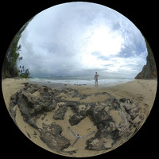
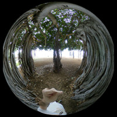

Sharing personal experiences through virtual reality.
I have been questioning reality a lot lately. What we call reality is a personal and subjective experience. We take it for the truth but we also know that our senses are highly inaccurate and unreliable.
The truth is perceived through the lens of our senses and it seems to me that direct access to truth is not humanly possible, at least no through perception.
Yesterday, I was standing on a beach, starring at the sea. I saw the sea as blue because I hold the concept of blue inside my mind. I perceived this landscape as relaxing, peaceful because these are concepts I have experienced before.
But this is simply mental labelling. My mind judges and attaches concepts to the product of my perception. The reality is actually colourless, tasteless, odourless and with no sound. My experience of the world is an interpretation of my perception. There is no objective experience in human terms.
I always had this theory that what I call blue may be perceived as my red for other people. There is no reference frame to compare our respective perceptions.
As this concept relates closely to VR, I'll come back to it later.
In today VR view, if you look down, you'll see 3 boxes. Lay your gaze on them to change the colours of the scene and experience what may be my perception of the world in your frame of reference.

Slide your phone on a Google cardboard and click the image to experience the VR view.
I arrived yesterday at Honolulu. It was an exhausting journey, but now it's already forgot, already forgiven.
I can't believe that about 24 hours ago I was wearing a winter coat and a woolie hat, making my way to Heathrow.
After waking up this morning, I was eager to explore the surroundings. I headed straight away to Waikiki Beach, a mere 5 minutes from my Airbnb.
Shortly after my breakfast, I found the tree pictured in today's view. It's located right on the side of the road in the seafront. It is pretty impressive with its branches turning into roots. It seems to offer me a shelter while being entirely open.
It made me wonder what it's like to be a tree. Being a living creature without self-consciousness as we experience it, does it mean that trees are not aware of other beings? If so, they must see us as what we are, without under- or over-estimating us.

Slide your phone on a Google cardboard and click the image to experience the VR view.